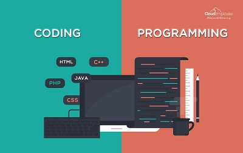

Hi There!! I am Narendra Kumar Vidda,
Currently persuing M.tech in Chemical Engineering at Indian Institute of Technology, Kanpur.
Currently persuing M.tech in Chemical Engineering at Indian Institute of Technology, Kanpur.
I have developed my own voice assistant python code, named on my wife 'BHAVANA'.
Take a lead in developing a webpage for Chemineers Society IITK.
In various biological and industrial applications where coating flows and pattern formation occurs due to gravity driven thin film flows. One can observe application of above type film flows in various coating processes like slide coating, curtain coating, spin coating and some biological processes like biomedical devices, optical fiber, polymer processing, crystal growth technique, membrane separation techniques, coalescence processes.
1. Performing linear stability analysis for both Non-Heated Substrate and Heated Substrate using MATLAB 2019a.
2. Performed numerical simulation using COMSOL 5.5.
Many times some industry such as textile or pulp and paper industry encounter this type of flow problem and also observed in Rotary Drum Drying, Filtration in Slurries, Paper making. Due to asymmetry cylinder rotation and mixing increases, which is desired in above industrial application.
1. Analyzed flow of non-Newtonian power law fluid across a rotating cylinder in a confinement using COMSOL 5.5
2. Observed that as asymmetric ratio (ùú∏) increases, for power law index (n) = 0.3, Drag coefficient increase upto a peak then decreases
3. Streamline trend for non-Newtonian fluid changing with Reynolds number as Re increases eddies formation over certain length increase
Designed a plant to produce 100kmol/hr of 99.9% pure Acetone using ASPEN HYSYS & ASPEN PLUS with more than 25 equipments like distillation column, heater, absorption tower and some controller to control temperature, flowrate. Application of acetone in Nail Polish Remover, Solvent used in manufacture of Plastics, Cosmetics and Personal care products.
1. Proceeded with Kinetic validation, VLE validation, heat integration, steady state and dynamics of plant also studied using various controllers
2. Optimized the process by minimizing Total Annualized Cost using various dominant design variables and degrees of freedom.
3. Process used: - Distillation Column, absorption tower, packed bed reactor
| Year of Passing | Name of Degree | Institution / Board | CGPA / Percentage |
|---|---|---|---|
| 2021 | Master of Technology | Indian Institute of Technology, Kanpur | 9.0/10.0 |
| 2017 | Bachelor of Technology | Indian Institute of Technology, Kanpur | 5.2/10.0 |
| 2012 | XII | Rajasthan Board of Secondary Education | 76.20 % |
| 2010 | X | Rajasthan Board of Secondary Education | 78.50 % |
C | Python 3.8 | MATLAB | Machine Learning Basics | HTML and CSS | JAVA | javaScript | jQuery | PHP
MS Office | Aspen HYSYS | Aspen Plus | Android Studio Basics | Wondershare Filmora | MATLAB |
COMSOL | PyCharm IDE| Adobe Photoshop 2021 | IntelliJ Idea IDE | AutoCAD Basics
|  | |